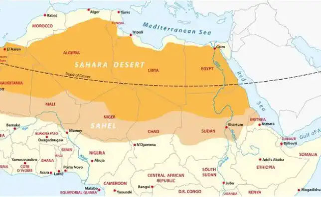

Depuis la révolution industrielle les activités humaines émettent de grande quantités de gaz à effet de serre principalement le dioxyde de carbone.
L’aire de l’Europe est cancérigène
Les voitures sont les deuxième plus gros émetteurs de dioxyde de carbone derrière les industries. Elles sont responsables de la grande partie de pollution de l’air . Un quart de la pollution de l’air est provoqué par les automobiles.
Elles émettent dans l'atmosphère des particules riches en hydrocarbure qui peuvent pénétrer dans les broches, ces particules sont suspectés d'être des cellules cancérigènes. Selon une étude de l'organisation mondiale de la santé les particules fines causeraient la mort de quarante-deux milles personnes en France.
La fin des glaces du Kilimandjaro
Pour avoir une idée sur l'urgence climatique, observons les deux photos du Kilimandjaro une montagne située en Tanzanie en Afrique. La première photo est prise en deux mille six, on voit que la calotte glaciaire est bien présent dans toutes l'étendue de la montagne. La deuxième est prise en deux mille treize et comme on peut l'observer il n’y a plus de calotte glaciaire.
Dans le livre de Mark Lynas six degrés que va-t-il se passer ?, l’auteur nous parle des recherches de Thomson et de son équipe un glaciologue de l'université de l’Ohio. D'après ces recherches en deux mille deux, il en a conclu que quatre-vingts pourcent de la glace avait déjà fondu et d'ici deux mille cinquante il n’y aura plus de glace. Mais ce n'est pas tout à cause de ce réchauffement des milliers d'espèce de plante et animaux sont en voie de disparition dans le continent africaine
Les réfugiés climatiques de l’Amérique
Aujourd'hui à cause de ce réchauffement climatique il existe des réfugiés climatiques. Il s'agit des personnes vivantes en Amérique et que leurs maisons sont souvent prises par les ouragans comme Katrina ou Catarina. Les scientifiques concluent que ces puissants cyclones sont dû au réchauffement. Une fois que les températures augmentent au niveau des mers, des vents violents commencent à se former et créer des cyclones. C’est le cas aussi en Afrique ou les inondations font beaucoup de ravages à cause de l'augmentation du niveau de la mer.
Le Sahel une conséquence direct du réchauffement climatique.
Cette zone très marquée par sa longueur de sa saison sèche de huit à neuf mois est une bombe à retardement. En effet, à cause de la modification de la pluviométrie, les sécheresses récurrentes, l'avancée du désert, la raréfaction de l'eau, des pâturages et l'accentuation de la pauvreté, trois cents mille personnes sont mortes dans les années soixante-dix à nos jours.
Il est temps de penser à une solution universelle pour éviter le pire.